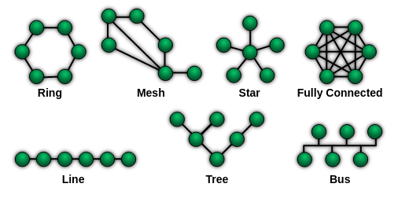

How to Undervolt a Laptop (with NixOS)
Sometimes your laptop might run too hot and you want to reduce the temperatures.
Apart from cleaning the fans and changing the thermal paste, there are 2 software options available to you.
Sometimes your laptop might run too hot and you want to reduce the temperatures.
Apart from cleaning the fans and changing the thermal paste, there are 2 software options available to you.
asyncio in PythonWhat do you think the output of the following code will be?
This is a short guide on how to setup Fedora with a Windows VM via libvirt, optionally sharing a RAID-1 Btrfs volume from the host to the Windows guest via SAMBA. I'm assuming you are coming from Windows.
Reasons why you might want to do this:
For a few months, while running my Windows 11 VM with a GPU passthrough-ed, I was getting random reboots/screen hangs. There was a clear pattern - the reboots/hangs occured whenever I launched a resource-intensive application on the VM, such as a game.
In an effort to trace down the problem, I looked through dmesg (truncated for brevity) for various boots:
I own an Amazon Kindle Paperwhite (2nd generation). For the longest time, I was looking for a solution that would enable me to sync my reading progress between my phone and Kindle, as well as transfer books between all devices wirelessly.
I finally managed to accomplish this with Syncthing, KOReader and Calibre-Web.
I use Syncthing, a peer-to-peer filesharing program for my devices (most recently on my Kindle as well). There are a few network topologies possible in such a setup.

Yjs is a conflict-free, replicated data type, which allows for distributed, collaborative editing and offline synchronization, with automatic conflict resolution.
It can also be used as a database backend.
Recently, I was deciding between Yjs and the Prisma + tRPC + SQLite combination. As it was a small todo-style app, I settled on Yjs.
Here are the factors I considered for this decision.
I keep most of my photos and videos on Photoprism, a great open-source Google Photos alternative with features like facial recognition and viewing photos by location.
The Mikrotik family of routers are known for their extensive configurability, offering enterprise level features such as PoE, custom routes, VLANs and more. It runs a custom Linux distribution known as RouterOS which offers a WebGUI and terminal interface, as well as SSH.
I wanted to replace my old Singtel WiFi Gigabit Router AC Elite, after it started intermittently dying.
Previously on Windows, I was using MediaMonkey to manage my music. It offered wireless syncing (over LAN) for the associated Android client, and worked well.
When I switched to Linux, I had to look for a replacement. I wanted a solution that was free and open-source, could be self-hosted on a server, and supported features such as bookmarks, playlists and transcoding (for clients not supporting certain formats).